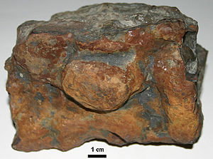

New here?

New to rockhounding and don't know where to start? Not to worry, we will show you the ropes. Click below to head over to our "Getting Started" guide
Getting StartedRocks & Minerals In Iowa

Iowa rockhounding maps to hunt for crystals, gemstones, minerals, and ores. Iowa, with its rich agricultural history and rolling landscapes, offers a surprisingly diverse range of rockhounding opportunities. Known for its abundant fossil finds, particularly in the Devonian Fossil Gorge, Iowa is a haven for paleontology enthusiasts. Collectors can also find treasures such as geodes, calcite, and gypsum in the state's various limestone and shale deposits. From its picturesque riverbanks to the vast expanses of prairie, Iowa's geological wonders await both beginner and experienced rockhounders.
Shop Our Merch!

We have tons of cool t-shirts, hats, water bottles, and stickers. Show off your love for rockhounding with our high-quality merchandise.
Visit StorePlease always bring appropriate attire and do research before venturing out to rock hunt and crystal hunt. Also, be sure to verify that the location you want to hunt at is available for public access. Rockhounding.org does our best to verify, but it is your responsibility to verify as well because sometimes things change. We are not liable for any actions you take from the information you find on this site.
Snacks & Hydration

Energy Bars
Stay energized with the best energy bars for your rockhounding adventures.
Our Favorites

Must Have Rockhounding Tools


Keeping accurate records of Rockhounding & Gemstone Hunting Locations is a community effort! Know of a good spot that is missing from our maps? Feel free to submit it below. Thank you for your contributions to the rockhounding community!
Popular Rocks, Crystals, & Gemstones In Iowa
-
 Barite
BariteBarite, a heavy sulfate mineral, can be found in Iowa's sedimentary rocks. Known for its varied crystal forms and colors, this mineral is used in various industries, including the production of drilling mud.
Read More -
 Jasper
JasperJasper, a variety of chalcedony, is known for its vibrant colors and patterns. It can be found in various locations across Iowa, often near riverbanks or in gravel deposits.
Read More -
 Crinoids
CrinoidsCrinoid fossils are abundant in Iowa's sedimentary rocks. These ancient marine animals, also known as sea lilies, lived in the shallow seas that once covered the region.
Read More -
 Calcite
CalciteCalcite, a common carbonate mineral, can be found in various forms and colors throughout Iowa. This versatile mineral is often found in caves, geodes, and sedimentary rocks.
Read More -
 Trilobites
TrilobitesTrilobite fossils are found in Iowa's limestone and shale formations. These ancient marine arthropods lived in the seas that once covered the state and are an exciting find for fossil enthusiasts.
Read More -
 Gypsum
GypsumGypsum, a soft sulfate mineral, is found in Iowa's sedimentary rocks, particularly in the western part of the state. It's often used in the construction industry and as a soil amendment in agriculture.
Read More -

Iron Oxide
Iron oxide, commonly known as rust, forms as a result of the oxidation of iron minerals. In Iowa, iron oxide can be found as a reddish-brown staining on rocks or as a component of soil, giving it its characteristic red color.
Read More -
 Chrysocolla
ChrysocollaChrysocolla, a copper-bearing mineral, is known for its vibrant blue-green color. While not abundant in Iowa, it can occasionally be found in the state's copper deposits.
Read More -
 Brachiopods
BrachiopodsBrachiopod fossils are commonly found in Iowa's sedimentary rocks. These ancient marine animals, resembling clams, inhabited the shallow seas that once covered the region.
Read More
Popular Rock Hunting Areas In Iowa
-
Keokuk Geode Region
The Keokuk Geode Region spans across Iowa, Illinois, and Missouri, but the largest concentration of geodes can be found in Iowa. Visitors can dig for these hollow, crystal-filled rocks that are popular among collectors.
Read More -
Bells Mill Park
Bells Mill Park is a popular campground destination that has some amazing rockhounding in the area. Specifically, you will want to look for lage black calcite crystals throughout the region.
Read More
Geology of Iowa
Iowa's geology has been shaped by a series of glacial advances and retreats, which left a diverse landscape featuring fertile soils and a variety of rock formations. During the Precambrian Era, the state's bedrock was formed, consisting primarily of igneous and metamorphic rocks, such as granite and gneiss.
Throughout the Paleozoic Era, the region experienced numerous marine transgressions and regressions, leading to the deposition of layers of sedimentary rocks, including limestone, shale, and sandstone. The state's most notable geological feature from this time is the Devonian Fossil Gorge near Iowa City, which contains an abundance of well-preserved fossils.
During the Pleistocene Epoch, multiple glaciations sculpted Iowa's landscape, leaving behind a series of glacial deposits known as drift. These deposits, along with the rich loess soils that blanket much of the state, contribute to Iowa's highly productive agricultural lands.
Iowa is also home to a variety of mineral resources, including gypsum, clay, and limestone. However, the state's most significant mineral resource is its abundant deposits of lead and zinc, which can be found in the Upper Mississippi Valley Lead-Zinc District in northeastern Iowa.